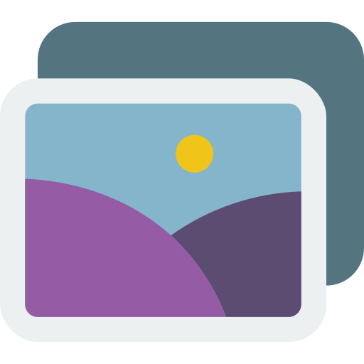

<ion-header>
  <ion-toolbar color="primary">
    <ion-buttons slot="start">
      <ion-icon (click)="backToHome()" name="arrow-back"></ion-icon>
      
      <ion-title>GAMBAR</ion-title>
    </ion-buttons>
  </ion-toolbar>
</ion-header>

<ion-content>
  <div class="container">
    <ion-grid>
      <!-- <div *ngFor="let data of questions | slice:0:10; let index=index"> -->
      <div *ngFor="let data of questions; let index=index">
        <ion-row *ngIf="index==currentNumber && !scoreShow" [@inOutAnimation]>
          <ion-col size="12">
            <div class="question-box" (click)="playAudio(data.id)">
              <span class="my-index">{{index+1}}.</span>
               <br>
              <audio controls id="alphabet{{data.id}}" #myAudio [hidden]="1">
                <source [src]="data.audio" type="audio/mpeg">
                Your browser does not support the audio element.
              </audio>
            </div>
          </ion-col>
          <ion-col *ngFor="let opsi of data.opsi; let i = index" size="12" class="zxc" (click)="nextQuestion(index, i, data.id)">
            <div [ngClass]="boxAnswer(data.id)">
              <span>{{q_opsi[i]}}. </span> 
            </div>
          </ion-col>
        </ion-row>
      </div>
      <ion-row *ngIf="scoreShow" class="my-score">
        <ion-col size="12">
          <span class="my-score-span">Nilai kamu</span>
          <h1 class="score-count">{{yourScore}}</h1>
        </ion-col>
        <ion-col size="12">
          <ion-icon *ngFor="let s of starCount" class="bintangbintangtiwi" name="star"></ion-icon>
          <ion-icon *ngIf="halfStar" class="bintangbintangtiwi" name="star-half-outline"></ion-icon>
          <ion-icon *ngFor="let s of otherStar" class="bintangbintangtiwi" name="star-outline"></ion-icon>
        </ion-col>
        <ion-col size="12">
          <div class="back-button" (click)="backToHome()">
            <ion-icon name="arrow-back"></ion-icon> Kembali
          </div>
        </ion-col>
      </ion-row>
    </ion-grid>
  </div>
</ion-content>